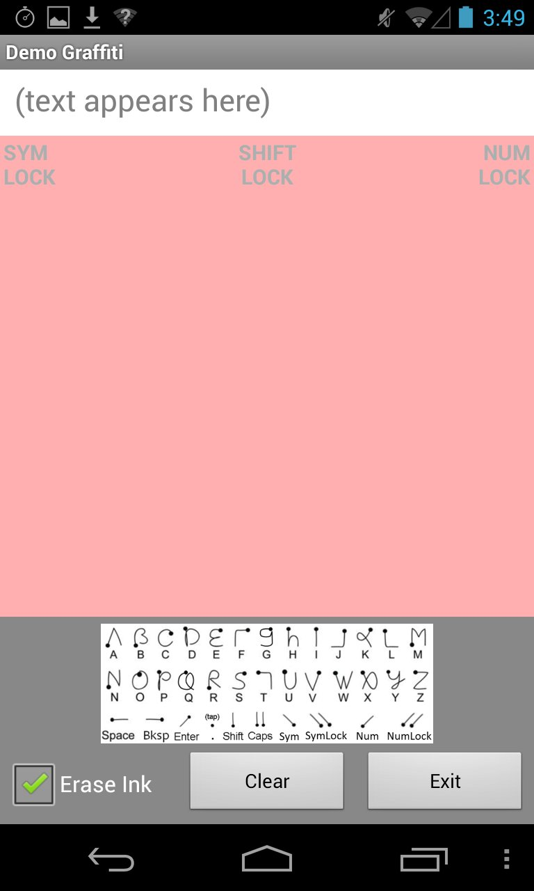
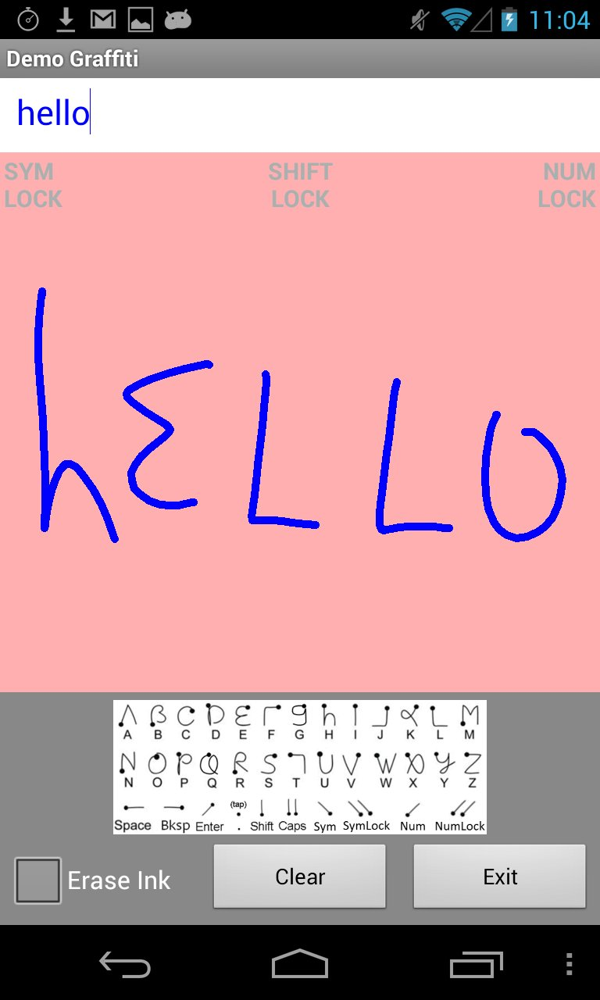
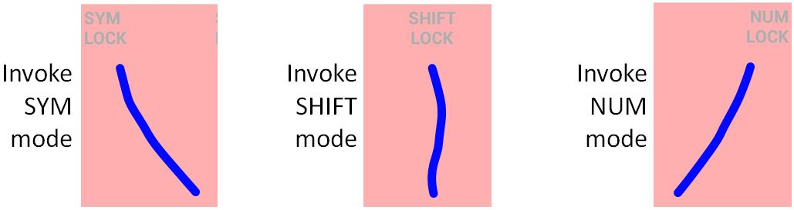

- java.lang.Object
-
- Activity
-
- ca.yorku.eecs.mack.demograffiti.DemoGraffitiActivity
-
- All Implemented Interfaces:
- GraffitiPanel.OnStrokeListener
public class DemoGraffitiActivity extends Activity implements GraffitiPanel.OnStrokeListener
Demo_Graffiti - demo of handwriting recognition using finger gestures on the surface of the tablet. Single-touch only.Here's is a screen snap upon launch (left) and after entering a few strokes (right): (Note: "Erase ink" is unchecked in the right-side image.)
  The core of this demo is a custom class called
GraffitiPanel, which is sub-classed fromView(see pink panels in screen snaps above). AGraffitiPanelreceives finger gestures and displays them as digital ink on the panel. Each gesture is passed on as aPointarray to aUnistrokeobject for recognition. The recognized result is written to a text field above theGraffitiPanel.The communication between the main activity and the
GraffitiPaneloccurs throughGraffitiPanel.OnStrokeListener. The main activity includesimplements GraffitiPanel.OnStrokeListenerin its signature. As well, it attaches the listener to theGraffitiPanelon initializationgraffitiPanel.setOnStrokeListener(this);and includes an implementation of theonStrokemethod, as defined in the listener. TheonStrokemethods beginspublic void onStroke(GraffitiEvent ge) { int charCode = ge.charCode; int type = ge.type; ...TheGraffitiEventobject is prepared within theGraffitiPanelupon gesture recognition and then passed to the main activity inonStroke. TheGraffitiEventobject includes information about the gesture, such as a character code, a type code, and so on. Full details are in theGraffitiEventAPI and source code.The heaving lifting is done in the
Unistrokeclass. Once a full gesture in inputted (onACTION_UPin theGraffitiPanel'sonTouchmethod), the gesture in the form of aPointarray is passed to therecognizemethod of theUnistrokeclass. There, the gesture is recognized with the result returned as a string. Full details on gesture recognition are in theUnistrokeAPI and source code.Back in
GraffitiPanel, some additional processing occurs based on the type of gesture. Gestures representing commands, such as shift, numeric shift, or backspace require special treatment. Usually, though, the result of recognition is a character (e.g., "a") and in this case the character is simply added to the text appearing in this demo's text view (see screen snap on right, above).The demo includes a few features to expand the text input capability. Note in the screen snaps above that there are watermarks (text in light gray) at the top of the
GraffitiPanel. These are for modes. There are three modes: SYM, SHIFT, and NUM. Each mode is invoked with a straight-line stroke in the direction of the watermark: North-West for SYM, North for SHIFT, and North-East for NUM: The four screen snaps below show the sequence of gestures for entering uppercase A. (i) The user first makes a North stroke. (ii) This puts the application into SHIFT mode, as indicated by SHIFT in red. (iii) The user then makes the stroke for "a". (iv) On finger lift, uppercase A appears with the SHIFT mode cleared.

Note that the sequence above was made with "Erase ink" unchecked, so the ink would persist on the display. Under normal operation, the ink is erased on each finger lift. Thus, in practice, strokes are typically made on top of one another.
Two consecutive North strokes puts the application into SHIFT_LOCK mode, allowing the input of multiple uppercase letters without requiring a separate North stroke before each letter. After some uppercase input, a single North stroke resets SHIFT mode.
One capability of the
Unistrokeclass is to swap dictionaries (see API). This feature is used in the demo to swap between the Graffiti dictionary for letters and a digits dictionary. A North-East stroke invokes NUM mode, swapping dictionaries. The strokes for digits are simple and intuitive:
NUM and NUM_LOCK modes are available in a manner similar to SHIFT and SHIFT_LOCK modes.
A North-West stroke invokes SYM mode:

Special symbols, such as punctuation, are entered in SYM mode by tapping on the symbol. SYM and SYM_LOCK modes are available in a manner similar to SHIFT and SHIFT_LOCK.
Perhaps you are wondering why the symbols are rendered in light gray in SYM mode. The reason is that regular Graffiti strokes can be made in SYM mode. So, in SYM mode both letters (Graffiti strokes) and symbols (taps) can be entered. Rendering the symbols in a light gray is less intrusive if the user wishes to mix the input of symbols and letters. Give it a try and see what you think.
{kind=link}
{kind=link}
{kind=link}
-
-
Constructor Summary
Constructors Constructor and Description DemoGraffitiActivity()
-
Method Summary
All Methods Instance Methods Concrete Methods Modifier and Type Method and Description voidonClick(View v)voidonCreate(Bundle savedInstanceState)Called when the activity is first created.voidonDestroy()Called when the activity is terminated.voidonStroke(ca.yorku.eecs.mack.demograffiti.GraffitiEvent ge)
-
-
-
Method Detail
-
onCreate
public void onCreate(Bundle savedInstanceState)
Called when the activity is first created.
-
onDestroy
public void onDestroy()
Called when the activity is terminated.
-
onClick
public void onClick(View v)
-
onStroke
public void onStroke(ca.yorku.eecs.mack.demograffiti.GraffitiEvent ge)
- Specified by:
onStrokein interfaceGraffitiPanel.OnStrokeListener
-
-